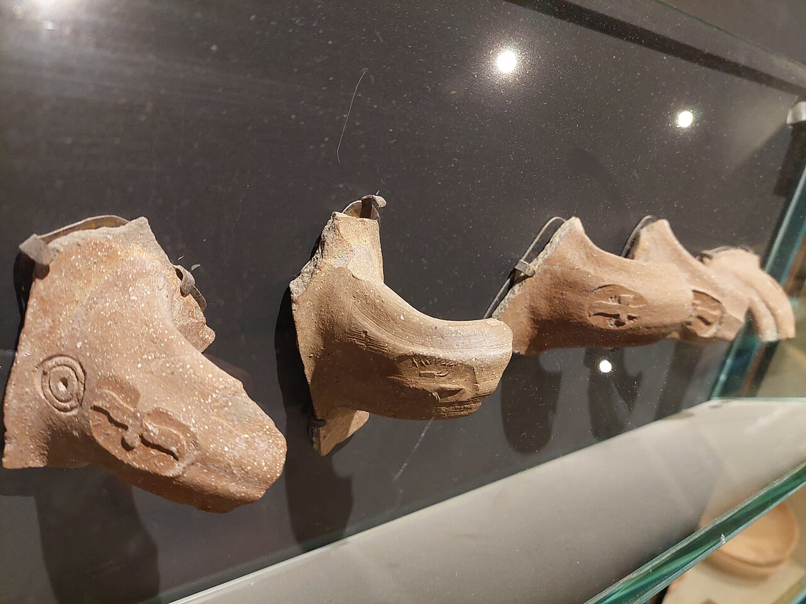

LMLK Jar-Handle Seals

- Find Name
- LMLK Jar-Handle Seals
- Historical Period
- Iron Age II
- Artifact Date
- Late 8th century BC (c. 700 BC)
- Date Discovered
- 1869
- Discovery Location
- Throughout Judah, Israel
- Current Location
- Israel Museum, Jerusalem, and other museums
- Timeline Era
- Divided Monarchy
- Description
- More than two thousand jar handles stamped before firing with the Hebrew letters lmlk — 'belonging to the king' — plus one of four towns (Hebron, Ziph, Socoh, or mmst) and a winged scarab or sun disk. First found by Charles Warren in 1869, they cluster in Judah and date to the reign of Hezekiah, most likely a royal stockpiling program ahead of Sennacherib's invasion in 701 BC.
- Biblical Significance
- When Assyria marched on Judah, Hezekiah did not only pray — he prepared: storehouses, waterworks, and stamped jars of oil, wine, and grain ready for a siege. The lmlk seals are the logistics of faith under pressure, the same king who spread Sennacherib's letter before the LORD also making sure the jars were full.
- Evidence Class
- Contextual
- Interpretations
- Scholars agree the stamps are genuine royal Judahite jar marks; debate concerns the meaning of ‘mmst’ (a place or the government) and whether the system was Hezekiah’s alone.
- Scripture Illuminated
- Related Books
- Related Events
Awaiting Review Not yet checked against scholarly sources. Treat its claims as provisional until this entry is reviewed. About verification
Last reviewed: not yet reviewed